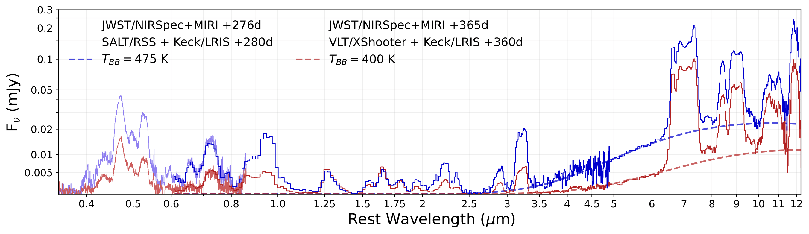

JWST Nebular Spectroscopy of SN 2023qov: Circumstellar Dust Emission in a Normal Type Ia Supernova (Submitted to ApJ)
SN 2023qov is a normal Type Ia supernova with circumstellar dust emission visible in its NIRSpec and MIRI JWST nebular spectra. This is shown in the below plot, the exess begins redward of 3 microns.

In Macrie et al. (in review), we interpret this emission as light from the SN absorbed and re-emitted by circumstellar dust, consistent with an infrared echo.
In order of decreasing confidence, the dust is likely pre-existing, primarily carbonaceous in composition, located within 1 light year of the supernova, and possibly associated with the progenitor system rather than being environmental.
Outreach
Under construction